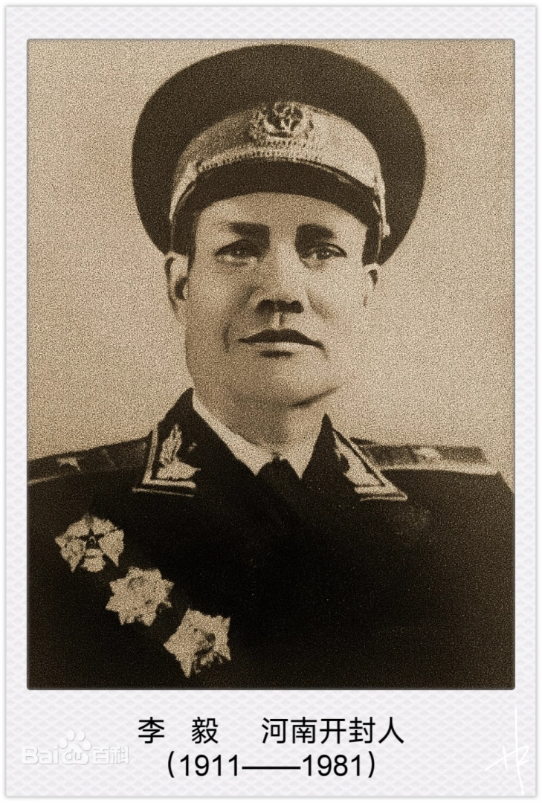
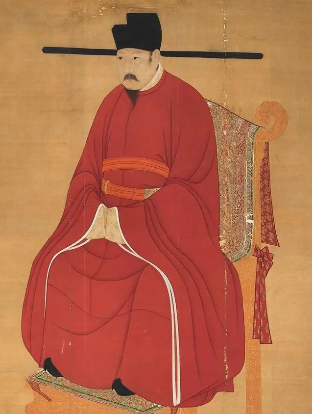
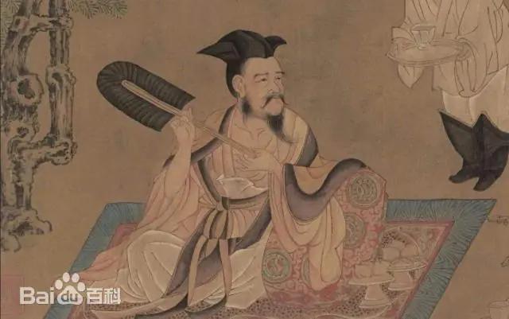
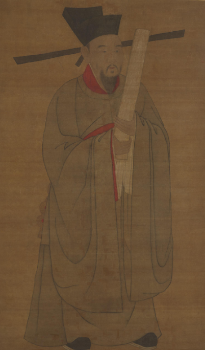
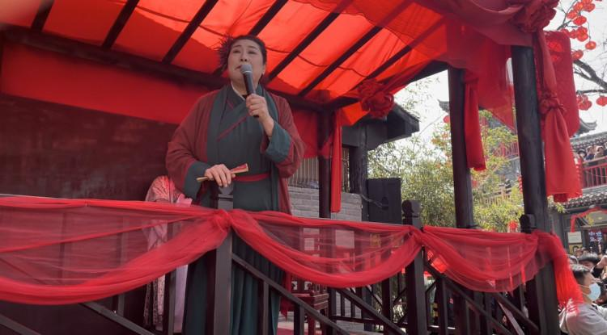

|

李毅李毅（1911年—1981年2月15日），中华人民共和国开国少将 [1]，河南开封人。1931年参加宁都起义，加入中国工农红军。1932年加入中国共产主义青年团。1935年转入中国共产党。参加了土地革命、抗日战争、解放战争。 1955年被授予少将军衔。1981年2月15日，在北京逝世，享年70岁 >>> |
|---|
|

赵祯宋仁宗赵祯（1010年5月30日－1063年4月30日），初名赵受益，宋朝第四位皇帝（1022年3月23日－1063年4月30日在位），宋真宗赵恒第六子，母为李宸妃。早年历封庆国公、寿春郡王、升王，官中书令。天禧二年（1018年），被立为皇太子。乾兴元年（1022年），赵祯即位，时年十三岁。他在位初期，由章献明肃皇后刘氏垂帘听政，直至明道二年（1033年）才开始亲政。在位中期爆发第一次“宋夏战争”，经三年交战后，双方签订“庆历和议”。嘉祐八年（1063年），赵祯在东京福宁殿崩逝，享年五十四岁。在位四十二年，为宋朝在位时间最长的皇帝。谥号体天法道极功全德神文圣武睿哲明孝皇帝，庙号仁宗，葬于永昭陵。 >>> |
|

阮籍阮籍（210年～263年），字嗣宗，陈留郡尉氏县（今河南省开封市）人，三国时期魏国诗人，竹林七贤之一。 阮籍初以门荫入仕，累迁步兵校尉，世称阮步兵。崇奉老庄之学，政治上则采取谨慎避祸的态度。 景元四年（263年），阮籍去世，享年五十三岁。作为“正始之音”的代表，著有《咏怀八十二首》、《大人先生传》等，其著作收录在《阮籍集》中。 >>> |
|

包青天在开封城里，包拯书写了他为官生涯中最浓重的一笔。“包公倒坐南衙”“怒铡陈世美”“狸猫换太子”“五鼠闹东京”“六劾张国丈”等民俗传说和历史故事早已是家喻户晓。毋庸置疑，包公成为了开封的城市名片。 包拯扬名于开封，而开封府因包拯而闻名，它初建于五代后梁开平元年（公元907年），已有一千多年历史。在北宋时期，被誉为天下首府。 >>> |
|

王婆说媒“王婆说媒”是河南省开封市万岁山·大宋武侠城线下相亲栏目，节目由赵梅主持，被网友称为“接地气版《非诚勿扰》”， 因开封《王婆说媒》节目的爆火，各地纷纷涌现出各具特色的“王婆说媒”的模仿文化潮流，平顶山、漳州等地的更是成为新晋打卡点，吸引游客前来体验。 2024年4月3日起，《王婆说媒》主持人赵梅老师因健康原因请假一个月，在此期间，由李莉老师等其他主持人为游客主持《王婆说媒》，并加场相关才艺演出。 2024年4月11日消息，开封万岁山武侠城景区“王婆说媒”节目热度渐退，观众相对减少，上台者男多女少。 2024年4月18日，河南开封万岁山武侠城景区发布公告：“王婆”的扮演者赵梅于2024年5月2日起，在五一假期回万岁山主持《王婆说媒》节目 >>> |
开封：奏响从大宋东京到现代开封的时代最强“潮”音清明景色新，古都正青春。开封将进一步擦亮中国（开封）清明文化节金字招牌，让这个国家级节会发出更加璀璨的光芒，把清明文化等资源优势转变为发展和产业优势，全方位促进制造立市、文旅强市双轮驱动，让海内外不仅看到一个古色古香的“老汴梁”，更日益看到一个出新出彩的“新开封”。 >>> |

古城开封 璀璨文明
2023－2024 版权所有 陈家奇文化有限公司